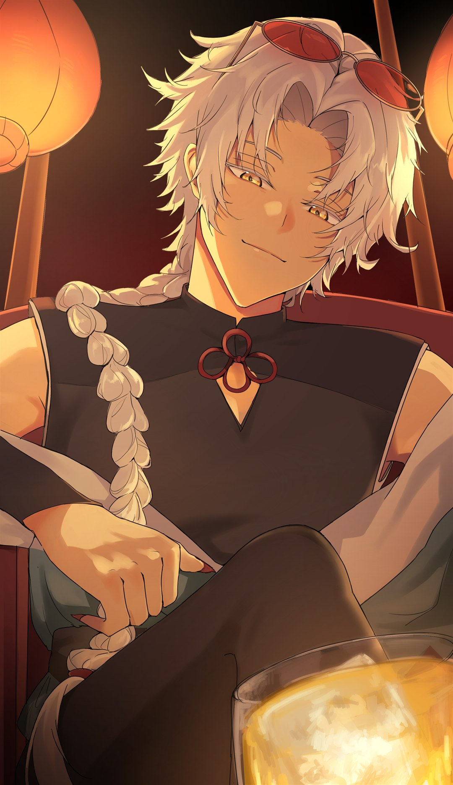
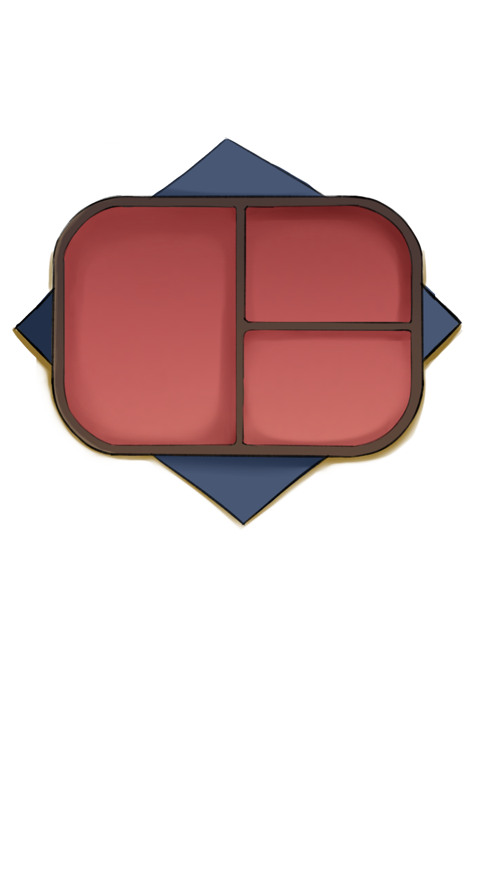
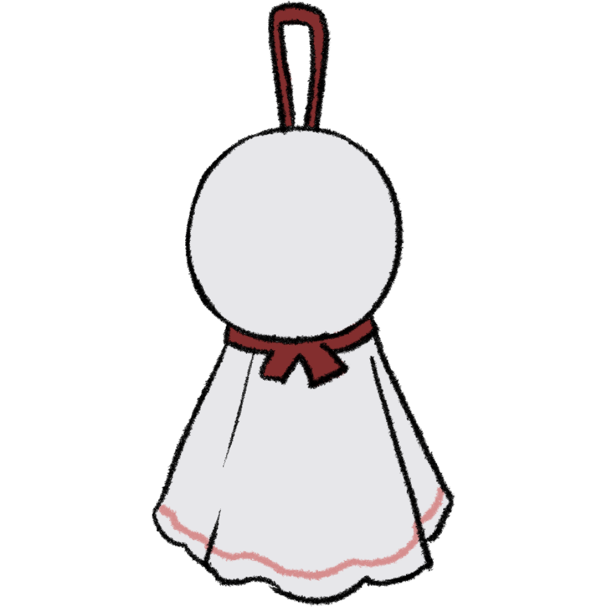

✦ A Spirit Awaits ✦
Ryokan of The Spirits
妖怪の宿
You are the last caretaker of a forgotten ryokan.
The spirits are watching.
One of them has been waiting for you.
— SPIRITS OF THE RYOKAN —
📜Tenjin
INTJ
💤Yumekui
INTP
🐉Ryuu
ENTJ
🦊Kitsune
ENTP
💀Shinigami
INFJ
❄️Yukionna
INFP
👹Oni
ENFJ
🍃Tanuki
ENFP
👺Tengu
ISTJ
🧜Ningyo
ISFJ
🕸️Jorogumo
ESTJ
🐕Inugami
ESFJ
🐈⬛Nekomata
ISTP
🐍Hebi
ISFP
⚡Raijin
ESTP
🌪️Fuujin
ESFP
Before you could step inside, an ancient bronze mirror stopped you cold.
Its surface showed no reflection — only a question, etched in silence:
"Who walks through this door?"
— Choose who you are —
TBA
Time to prepare
some bento.
— tap to continue —

— Place your offering —
おにぎり
から揚げ
えびてんぷら
さしみ
さば
たまこ
レモン
大葉
うめぼし
— The spirit asks —
The rain keeps coming…
Let's make a
teru teru bōzu.
— tap to continue —
— Draw its face —
— Dress it up —

運
Your destined one is awakening…
CHAPTER
— tap to continue —